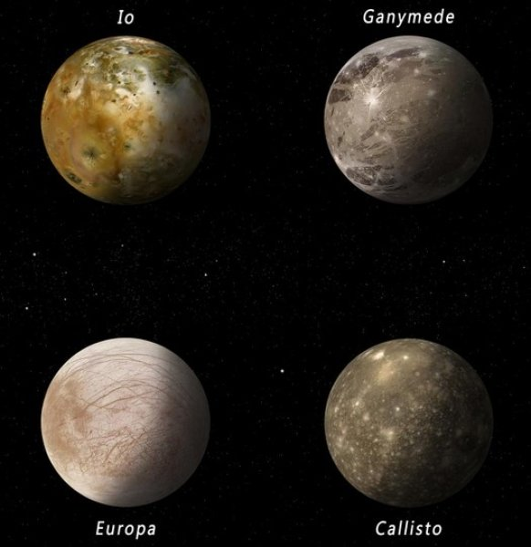

Юпітер – найбільша планета Сонячної системи. Один Юпітер важить в два з половиною рази більше, ніж всі інші планети разом. Щоб долетіти до Юпітера потрібно приблизно 2 роки. Назва планети походить від імені верховного бога-громовержця Стародавнього Риму. А ще тут є Велика Червона Пляма. Люди стежать за цією плямою вже більше 300 років. За цей час вона не раз змінювала свої розміри і яскравість, часом ненадовго зникала. Вчені вважають, що це гігантський атмосферний вихор. В атмосфері Юпітера розташовані довгі шари хмар, через які Юпітер виглядає смугастим. Кільце цієї планети, на відміну від кільця Сатурна, вузьке, і не таке вже помітне. Ця планета відноситься до газових гігантів, тобто щільним в ній може бути тільки внутрішнє ядро. Континентів там немає, тому що немає як такої поверхні, за доповідями вчених вона газова і являє собою киплячий океан рідкого водню. На Юпітері настільки високий тиск, що водень там стає рідким. А оскільки на цій планеті ще й дуже висока температура, така ж, як на поверхні Сонця: +6000 градусів Цельсія (а ядро ще гарячіше), то ж життя там бути не може.
 У ніч на 7 січня 1610 року Галілей спрямовує створений ним 32-х кратний телескоп на небо. Він побачив там не тільки місячний пейзаж, гірські ланцюги і вершини, але й відкрив чотири найбільших супутники Юпітера, які зараз носять назву «галілеєвих». Завдяки своєму відкриттю, яке він описав у творі «Зоряний вісник», Галілей незабаром стає самим знаменитим ученим Європи. Книга мала сенсаційний успіх, навіть короновані особи поспішали обзавестися телескопом. Кілька телескопів Галілей подарував Венеціанському сенату, який на знак подяки призначив його довічним професором з окладом 1000 флоринів. Німецький астроном Симон Маріус (1573 — 1624) одночасно і незалежно від Галілея відкрив усі чотири супутники Юпітера (1610), і дав їм імена Іо, Європа, Ганімед і Каллісто. Історія розпорядилася так, що Галілея вважають першовідкривачем супутників, за якими закріпилися імена, дані Маріусом. Супутник Юпітера Ганімед має діаметр перевершує діаметр Меркурія. Під поверхнею Європи виявлений глобальний океан, а Іо відомий тим, що на ньому діють найпотужніші в Сонячній системі вулкани. Каллісто — одне із самих кратерірованних тіл в Сонячній системі. Поверхня супутника дуже стара, близько 4 млрд. років, а його геологічна активність украй низька. У Юпітера є слабкі планетарні кільця. Супутники яскраві і обертаються по досить віддаленим від планети орбітах, так що їх легко розрізнити навіть в польовий бінокль. Першість у відкритті супутників оспорював також німецький астроном Симон Маріус, який побачив їх ще в 1609 році, але не опублікував відкриття. Пізніше саме Маріус дав цим чотирьом супутникам назви, взявши імена з давньогрецьких міфів. Юпітер досліджувався вісьмома автоматичними міжпланетними станціями НАСА. Найбільше значення мали дослідження за допомогою апаратів «Піонер» і «Вояджер», і пізніше «Галілео». Останнім апаратом, який відвідав Юпітер, був зонд «Нові горизонти», який прямує до Плутона. На сьогодні відомо 63 супутника Юпітера, серед яких Галілеєві — найбільші.
Вчені заявили про те, що Велика червона пляма Юпітера отримала свій незвичайний відтінок через космічні промені, сполуки сірки і вуглеводнів. Висновки дослідників опубліковані в журналі Icarus. Дослідники припустили, що червоний колір плями обумовлений "бомбардуванням" її поверхні космічними променями і появою в ній великої кількості атомів сірки. Сірка дійсно забарвлює аналог атмосфери Юпітера в червоний колір, але колір, отриманий вченими в лабораторії, відрізнявся від відтінку, який можна було помітити на знімках "Хаббла" і "Юнони". Вчені припустили, що у Великій червоній плямі містяться й інші речовини, які впливають на її колір. Змішуючи їх одне з одним і опромінюючи пучками ультрафіолету, що імітують космічні промені, вчені виявили, що другим компонентом "червоної фарби" Юпітера був ацетилен – вуглеводень, що міститься в невеликих кількостях у верхніх шарах атмосфери планети. Додавання ацетилену в аналог матерії Юпітера в лабораторії зробило колір Великої червоної плями не тільки більш реалістичним, але і більш темним. На думку дослідників, це пояснює те, чому інші регіони планети не мають такого забарвленням. Велика кількість ацетилену присутня тільки у Великій червоній плямі. Велика червона пляма – ураган на Юпітері шириною 16 тисяч кілометрів, який спостерігається з 1830 року, а його існування на планеті передбачалося ще 350 років тому.
Вплив Венери і Юпітера на Землю призводить до масових вимирань. Гравітація Юпітера катастрофічно змінила орбіту Землі. Вплив Венери і Юпітера на Землю призводить до масових вимирань. Кожні 405 тисяч років орбіта Землі трохи подовжується через гравітаційного впливу Юпітера і Венери, що змінює клімат планети і впливає на розвиток життя на ній, у тому числі призводить до масових вимирань. До такого висновку прийшли вчені під керівництвом Денніса Кента (Dennis Kent) з Ратґерського університету. Цикл 405 тисяч років був передбачений на основі розрахунків руху планет, однак результати теоретичного моделювання були достовірними лише для останніх 50 мільйонів років. З відносно невеликим збільшенням ексцентриситету (ступеня відхилення від окружності) орбіти Землі також тісно пов'язані зміни в розташуванні магнітних полюсів планети. Дослідники отримали більш докладні дані про зміни в напрямку магнітного поля Землі, проаналізувавши відкладення в рифтовом басейні Ньюарк (штат Нью-Джерсі) і осадові породи в геологічній формації Chinle Formation (штат Арізона). Вони витягли керн, датований пізнім тріасовим періодом в проміжку часу від 253 до 202 мільйонів років тому. У зразках були мінерали циркону з вкрапленнями магнетиту - кристала, по якому можна судити про стан магнітного поля планети. Отримані результати відповідали теоретичним розрахункам, що дозволяє використовувати цикл для більш точного датування відбуваються на Землі подій, в тому числі тріасово-юрського вимирання, коли зникла велика кількість видів тварин, звільнивши екологічні ніші динозаврам.